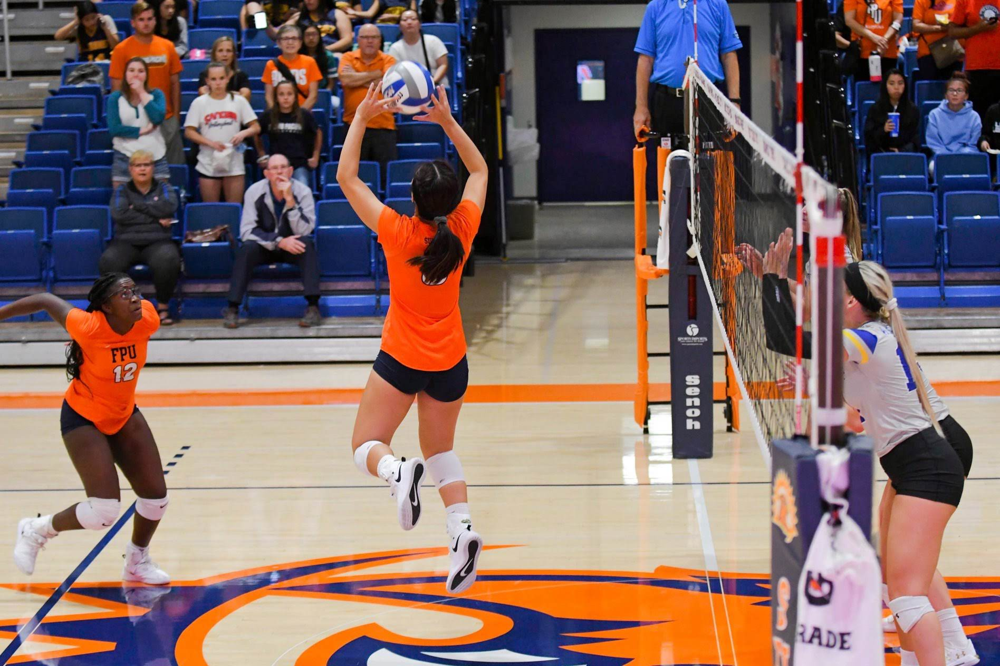

<body>
      
  <h1>All About Being a Setter</h1>
  <div>
    <h3>Great Tips from Other Sites</h2>
    <ul>
      <li><a href="https://betteratvolleyball.com/13-volleyball-setting-tips-plus-4-bonus-drills/">
  Visit the Better At Volleyball site for 13 setting tips and 4 bonus drills!</a></li>
      <li><a href="https://www.ussportscamps.com/tips/volleyball/how-to-set-a-volleyball-three-important-techniques">
        Three basic tips for setting</a></li>
      <li><a href="https://www.teamusa.org/USA-Volleyball/Features/2015/September/14/5-keys-to-better-setting">
  Team USA breaks down 5 keys to better setting</a></li>
    </ul>
  </div>
<div>
<h3>More:</h3>
<ul>
  <li><a href="https://tran6christina.github.io/CSSE-370/3page.html">DS/Libero Tips</a></li>
  </ul>
</div>
</body>
